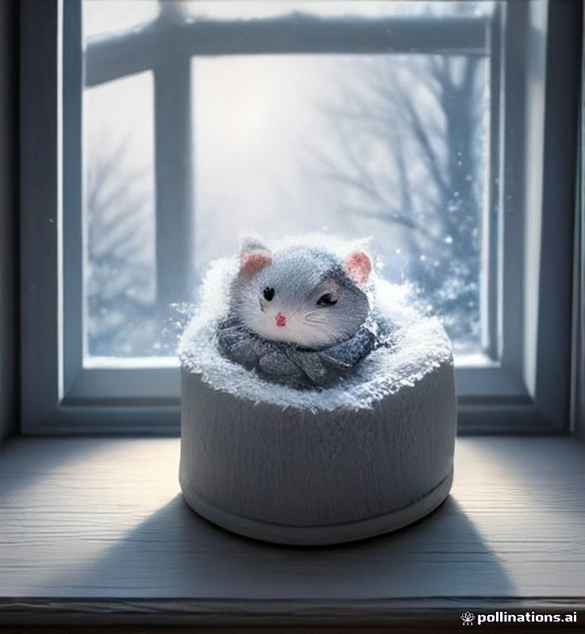

A collection of six cozy, printable pixel-art designs featuring winter moths, amber glows, and Pip's favorite warm spots. Perfect for printing and cutting out to decorate your windows for the long winter nights.

← Loki's Town